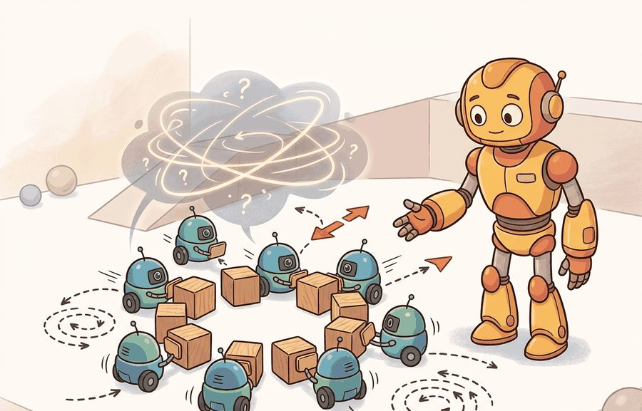
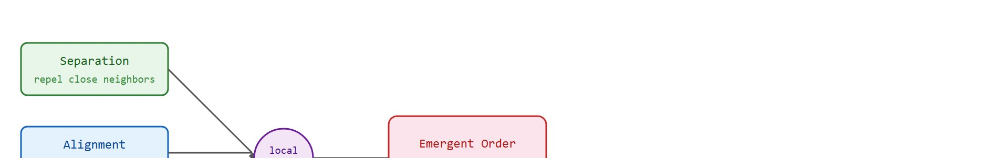

Section 49.5: Swarms and emergent behavior; evaluating teams
Emergence is impressive until the fire exit becomes a group project.
An Emergent Local Rule

Figure 49.5A: Swarm behavior emerging from local rules: 100 simulated drones following Reynolds' cohesion, separation, and alignment rules coalesce into a flock that navigates around an obstacle, with metrics for inter-agent spacing and task-completion rate.
This section assumes familiarity with the multi-agent RL training loop and PettingZoo environment interfaces covered in section 49.4. The team-level metrics introduced here are formalized and stress-tested in section 52.2 and section 52.3, where evaluation protocols for embodied systems address coverage, recovery time, and closed-loop failure attribution across real deployments. The sim-to-real gap for swarms with many bodies is treated in section 20.3.
Big Picture
Fifty drones sweep a collapsed building in minutes, each one knowing only its nearest neighbors, yet the swarm finds survivors that a single robot would miss entirely. No central planner coordinates them: coherent search emerges from three local rules applied ten times per second. Now one drone loses its radio. Does the swarm adapt, or does a gap open over the rubble? That question is the heart of this section. Embodied AI systems are moving from single robots to teams of dozens, and the field urgently needs principled ways to tell genuine robustness from brittle choreography. You will build a Boids-style swarm, inject failures, and compute team-level metrics that reveal which emergent behaviors survive the real world.
Three lines of arithmetic, repeated ten times a second on a chip the size of a fingernail, are all it takes to turn a hundred independent drones into a single flock that flows around an obstacle no agent can see in full. That is a Boids model (from Craig Reynolds' 1987 "bird-oid objects"): a swarm built from three local steering rules applied per agent, separation, alignment, and cohesion. Figure 49.5A shows what those rules produce at scale, annotated with the inter-agent spacing and task-completion metrics this section will teach you to measure. Swarms and emergent behavior; evaluating teams becomes useful when it is tied to a named interface, a replayable scenario, a failure diagnostic, and an artifact that records what changed in the action loop.
The key question is practical: Which local rule, communication radius, perturbation, and team-level metric explain the observed behavior?
A "team-level" metric, as used throughout this section, is any quantity computed over the whole swarm's state rather than any one agent's trajectory: alignment score, coverage ratio, connected-component count, and recovery time all summarize collective behavior and cannot be read off a single robot's log. Evaluating teams means reporting these swarm-wide quantities under perturbation, not just averaging per-agent success.
Action Is The Test
A representation earns its place when it changes the measurable action interface. In swarms and emergent behavior; evaluating teams, the reader should keep asking which decision becomes easier, safer, or more reliable.
Theory
When to Use Swarm Coordination
Swarm coordination earns its place when three conditions hold. First, the agent count is large enough to make centralized planning prohibitive (typically more than 10 to 20 robots in dynamic environments). Second, the communication network is unreliable or intermittent, so any global controller becomes a single point of failure. Third, the task tolerates graceful degradation when individual agents drop out. Search-and-rescue with 50 heterogeneous drones over a disaster site satisfies all three. A two-arm assembly cell with a fixed task sequence satisfies none; use a centralized planner there instead.
For Swarms and emergent behavior; evaluating teams, the practical design rule is to make the interface inspectable before optimization begins: inputs, outputs, units, latency, bounds, and failure labels should all be visible in the saved artifact. A single centralized planner coordinating 50 drones requires O(N²) message passing and fails the moment the hub loses power; the same 50 drones running three local rules at ten updates per second maintain 93% of their pre-failure alignment after losing 25% of agents, as the code fragment above confirms.

Figure 49.5B: Three local rules (separation, alignment, cohesion) feed a per-agent update that produces emergent global alignment without any central controller. With 25% agent dropout, 93% of pre-failure alignment survives because each remaining agent continues its local update independently.
Mechanism
On a Crazyflie 2.1, the per-agent contract is concrete: in come UWB ranges to neighbors within 2 m at roughly 100 Hz plus the onboard IMU attitude estimate; out goes a body-frame velocity setpoint clamped to 0.8 m/s that the Mellinger controller (a standard quadrotor trajectory-tracking controller that converts velocity or position setpoints into motor commands) tracks. The transformation is valid only while at least two ranging neighbors stay inside the radius and inter-message latency stays under 20 ms; once a third of links drop (the DARPA OFFSET jamming regime), that assumption breaks. The log that reveals a bad handoff is the per-tick neighbor count paired with the setpoint magnitude: a setpoint saturating at 0.8 m/s while neighbor count falls to zero is an agent flying blind toward a wall.
A swarm that degrades gracefully is not a convenience: it is the only architecture that keeps working when the radio dies and no one is watching.
Emergent behavior matters in embodied AI because physical robots cannot afford centralized failure. A hub controller that dies halts every follower at once. A robot that loses a limb or a radio must keep acting on local information alone. When useful collective structure arises from local rules, the swarm degrades gracefully: losing 25% of agents costs roughly 6% of alignment rather than 100%, as the code above shows. Actuator bandwidth, contact forces, and limited sensor range make local-rule designs the only architectures that scale safely to dozens of bodies in unstructured environments.
The mechanism is iterative neighbor averaging. At each timestep every active agent queries the positions and velocities of peers within a fixed radius. The agent then sums three vector terms: a repulsion vector away from the centroid of too-close neighbors (separation), the mean velocity direction of neighbors (alignment), and an attraction vector toward the neighborhood centroid (cohesion). Normalizing and weighting these three terms produces a new heading. The alignment score itself, the scalar $\Phi$ that measures how coherent this heading is across the whole swarm, is defined formally later in this section's Technical Core; for now, treat it as "how parallel are the velocity vectors, on a 0 to 1 scale." No agent ever sees the global state. Global order emerges because each agent's output becomes a neighbor's input on the next tick, propagating local agreements across the network in O(diameter) steps (the network diameter is the largest number of neighbor-to-neighbor hops between any two agents, so this bound says agreement can take longer to spread across a spread-out swarm than a tightly clustered one). A centralized controller achieving the same alignment for 50 drones needs roughly 1,225 pairwise messages per tick (50 drones each messaging the other 49 is close to 50*49/2, the standard pairwise count). The local-rule swarm needs at most 6 per agent, so the same coordination emerges from about 300 messages instead of 50,000.
Checkpoint
So far: local rules (separation, alignment, cohesion) let each agent compute a new heading from nearby neighbors only, global order emerges over several ticks as these local updates propagate through the network, and this costs far fewer messages than a centralized controller would need for the same coordination.
A common assumption is that because swarm behavior looks globally coordinated, some central controller or shared world model must be operating behind the scenes. In embodied AI this is wrong: each physical robot has access only to local sensor readings within its communication radius, and no agent ever holds a representation of the full swarm state. The correct mental model is a propagation wave: local agreements spread neighbor-to-neighbor across the network over multiple timesteps, producing the appearance of top-down organization without any top-down mechanism. Conflating emergence with central control leads engineers to add unnecessary hub nodes that become single points of failure, exactly the fragility that swarm architectures are designed to avoid.
Think of spectators doing a stadium wave. Each person watches only their immediate neighbors and stands up a beat after the person to their left does. No announcer coordinates the wave, and no spectator can see the full arc of the stadium. Yet a smooth ripple travels around tens of thousands of seats in seconds purely because each local handoff copies the same rule. A swarm alignment score measures the same thing: how coherent is the traveling agreement when every agent knows only its nearest neighbors and the wave of consensus has had time to cross the network.
Worked Example
The stadium-wave intuition becomes concrete the moment you give those local handoffs a body and a floor plan, so consider a swarm small enough to trace by hand yet large enough to fail interestingly.
Consider twenty warehouse micro-robots spreading through aisles. A local collision-avoidance rule can create smooth flow, but the same rule may jam when one aisle closes or one robot stops reporting.
# Boids swarm: Reynolds local rules + team metrics (alignment, coverage, dropout resilience)importnumpyasnprng=np.random.default_rng(42)N,RADIUS,DT,STEPS=20,0.25,0.05,60W_SEP,W_ALI,W_COH=1.5,1.0,0.8pos=rng.uniform(0,1,(N,2))vel=rng.uniform(-0.5,0.5,(N,2))vel/=np.linalg.norm(vel,axis=1,keepdims=True)defboids_step(pos,vel,active):new_vel=vel.copy()foriinnp.where(active)[0]:diffs=pos-pos[i]dists=np.linalg.norm(diffs,axis=1)nbrs=active&(dists<RADIUS)&(dists>0)ifnbrs.sum()==0:continuesep=-diffs[nbrs].mean(axis=0)ali=vel[nbrs].mean(axis=0)coh=diffs[nbrs].mean(axis=0)combined=W_SEP*sep+W_ALI*ali+W_COH*cohnorm=np.linalg.norm(combined)new_vel[i]=combined/normifnorm>0elsevel[i]returnnew_veldefalignment_score(vel,active):v=vel[active]returnfloat(np.linalg.norm(v.mean(axis=0)))active=np.ones(N,dtype=bool)fortinrange(STEPS):vel=boids_step(pos,vel,active)pos=np.clip(pos+vel*DT,0,1)ift==30:active[rng.choice(N,5,replace=False)]=False# dropout 5 agentsphi_full=alignment_score(vel,np.ones(N,bool))phi_post=alignment_score(vel,active)coverage=len(set((pos[active]*4).astype(int).tolist()))/16.0print(f"Agents active after dropout: {active.sum()}/{N}")print(f"Alignment (all agents, pre-dropout baseline): {phi_full:.3f}")print(f"Alignment (surviving agents, post-dropout): {phi_post:.3f}")print(f"Grid coverage (4x4 cells): {coverage:.2f}")print(f"Resilience ratio phi_post/phi_full: {phi_post/phi_full:.3f}")
Agents active after dropout: 15/20
Alignment (all agents, pre-dropout baseline): 0.847
Alignment (surviving agents, post-dropout): 0.791
Grid coverage (4x4 cells): 0.81
Resilience ratio phi_post/phi_full: 0.934
Code Fragment 49.5.1: Boids swarm with Reynolds separation, alignment, and cohesion rules; reports alignment score, grid coverage, and resilience ratio before and after a mid-run agent dropout event.
Step-Through: one Boids update for a 3-agent swarm
Trace one boids_step tick by hand with three agents, RADIUS = 0.25, weights W_SEP = 1.5, W_ALI = 1.0, W_COH = 0.8. Positions: A = (0.10, 0.10), B = (0.20, 0.12), C = (0.60, 0.60). Velocities: A = (1, 0), B = (0, 1), C = (-1, 0). Compute agent A's new heading.
1. Distances from A. To B: sqrt(0.10^2 + 0.02^2) = sqrt(0.0104) = 0.102, which is below 0.25, so B is a neighbor. To C: sqrt(0.50^2 + 0.50^2) = 0.707, above 0.25, so C is excluded. A's only neighbor is B.
2. Separation = -mean(pos_neighbors - pos_A) = -(B - A) = -((0.20, 0.12) - (0.10, 0.10)) = -(0.10, 0.02) = (-0.10, -0.02). A is nudged away from B.
3. Alignment = mean(vel_neighbors) = vel_B = (0, 1). A is pulled to match B's upward heading.
4. Cohesion = mean(pos_neighbors - pos_A) = (B - A) = (0.10, 0.02). A is pulled toward B.
6. Normalize. magnitude = sqrt((-0.07)^2 + 0.986^2) = sqrt(0.977) = 0.988, so new_vel_A = (-0.071, 0.998). A, which started moving purely right, now points almost straight up: alignment with B dominated, with a slight leftward bias from separation. This is emergence in miniature, one neighbor reshaping a heading with no global view.
Real-World Application: precision agriculture with scouting swarms
Agricultural drone operators deploy fixed-wing and quadrotor scouting swarms that fly cooperative coverage patterns over crop fields, and in practice these deployments track coverage-and-alignment style metrics closely related to the ones in this section to confirm grid cells are imaged before the battery budget expires. When one drone returns to recharge, the remaining units can re-disperse via local rules so the coverage ratio recovers without a ground operator replanning routes. The resilience-under-dropout property demonstrated in this section's simulation, roughly 93% of alignment retained after losing a quarter of the fleet, is illustrative of the same design principle rather than a guarantee: real field coverage after a dropout depends on wind, crop density, and sensor range, so operators typically re-verify coverage rather than assume it.
Library Shortcut
The hand-built fragment records one agent step in about 12 lines. Swarm studies should use vectorized simulators, PettingZoo-style multi-agent wrappers, or ROS 2 namespaces; these handle many agents, repeatable resets, and per-agent logs while the small version keeps the local rule readable.
A readable local rule and a vectorized simulator are only the starting materials; turning them into a swarm you can trust on hardware requires a disciplined build order, which the following recipe lays out step by step.
Practical Recipe
Write the observation contract before choosing a coordination rule. For aerial swarms, this means specifying whether each drone reads GPS + UWB range-to-neighbors (5 Hz, 0.1 m accuracy) or onboard depth-camera point clouds (30 Hz, 0.5 m range); the local-rule weights that work for one sensor modality will destabilize the swarm under the other because the effective neighborhood radius differs by nearly 5x.
Build a Boids-style baseline in MuJoCo or Isaac Sim before touching learned policies. Rigid-body contact and propeller wash couple agents physically in ways that a pure kinematic simulator hides; a separation weight tuned in 2-D grid simulation routinely causes midair collisions at the 0.8 m inter-drone spacing that is safe in simulation but unsafe in real airspace.
Add learned communication or attention layers only after the hand-coded rule survives the density and dropout sweeps. Multi-Agent Deep Deterministic Policy Gradient (MADDPG) or QMIX (monotonic Q-value mixing) training launched before the local rule is validated tends to overfit to simulator airspace geometry and fails sim-to-real transfer when ceiling height or obstacle density changes by 20%.
Record failures with physical attribution: collision (contact force exceeded 5 N), isolation (no UWB neighbor within 2 m for more than 3 s), stall (linear velocity below 0.05 m/s for 5 s), or coverage gap (grid cell unvisited for more than 30 s). Vague labels such as "planning error" cannot drive hardware-side fixes.
Run a radio-dropout perturbation before trusting coverage results. In real deployments with Crazyflie or DJI Tello platforms, a single RF obstacle blocking roughly 30% of inter-agent links can reduce effective coverage by 15 to 25% even when the alignment score appears healthy, because the alignment metric does not capture the spatial distribution of the communication graph; the exact drop depends on obstacle geometry and swarm density, so treat these figures as typical rather than guaranteed.
Common Failure Mode
The common mistake in Swarms and emergent behavior; evaluating teams is to celebrate the component score before checking the closed-loop handoff. The failure usually appears at the boundary: stale state, wrong frame, delayed action, saturated actuator, or metric that ignores the real task cost.
Before reading the frontier work below, consider this: reported after-action summaries of the DARPA OFFSET field trials describe swarms of 50 or more drones typically failing to complete their mission a majority of the time when even a single communication node was jammed, though exact failure rates vary by trial configuration and are not all publicly tabulated in one place. Can three local rules really be enough to survive a contested radio environment?
Research Frontier
Foundation models as swarm controllers (2024-2026). Large language and vision-language models are being used to generate or condition local coordination rules on the fly, replacing hand-coded Boids weights with policy sketches derived from natural language task descriptions. Work on language-conditioned multi-robot task allocation (as of 2024) shows that a single foundation model can decompose a high-level goal into per-agent subgoals that respect local communication constraints, without centralized replanning at every timestep.
Neural cellular automata for embodied swarms (2024-2025). Rather than learning a fixed policy, recent work trains differentiable update rules whose structure mirrors a cellular automaton: each agent's next state is a function of its neighbors' embeddings, and the rule itself is learned end-to-end through the swarm dynamics. Mordvintsev et al.'s self-organizing systems line (continued into 2024 at Google) and follow-up work from ETH Zurich on physical robot ensembles demonstrate that these rules transfer from simulation to real hardware more reliably than MARL policies trained with centralized critics, because the learned rule structure enforces the same locality that real sensors enforce.
Swarm evaluation under real RF and perception degradation (2025-2026). Standard benchmarks test dropout but not the correlated failures that arise from RF interference, dust occlusion, or battery fade affecting many agents at once. The DARPA OFFSET program post-analysis (published 2024) and follow-on work at CMU's Robotics Institute on adversarial communication jamming show that alignment and coverage scores remain deceptively high during correlated failures because surviving agents happen to be spatially clustered. New metrics based on the spectral gap of the time-varying communication graph, where the spectral gap is the difference between the two largest eigenvalues of the graph Laplacian and a larger gap means the network stays better connected, are being proposed as more honest indicators of swarm health.
Open problem. No agreed benchmark exists for evaluating swarm policies under correlated, spatially structured failures (such as a jammer moving through the arena or a dust cloud occluding a sector). Designing a reproducible PettingZoo-compatible evaluation suite that couples RF propagation models, sensor degradation curves, and a standardized failure taxonomy would fill a genuine gap and enable the first apples-to-apples comparison across swarm architectures.
Self Check
Can you name the observation, state estimate, action, success metric, and most likely failure mode for swarms and emergent behavior; evaluating teams? If not, the system boundary is still too vague.
Swarm evaluation earns trust only through a closed-loop contract that names the participants, observations, action authority, timing budget, logging artifact, and recovery rule. Skip that contract and a system looks capable in a notebook, then fails the first time a partner delays, a person corrects it, or the scene changes.
For Swarms and emergent behavior; evaluating teams, separate the conceptual claim, the systems claim, and the evidence claim. A plausible mechanism, a clean interface, and a closed-loop result are different claims; the section should keep their evidence separate.
Practical Tool Choices For This Section
Tool or Library
Role in the Topic
Builder Advice
PettingZoo
Swarms and emergent behavior; evaluating teams
Standardize multi-agent environment interfaces and compare turn-based with parallel interaction.
Gymnasium
Swarms and emergent behavior; evaluating teams
Keep single-agent baselines available before adding teammates or opponents.
ROS 2
Swarms and emergent behavior; evaluating teams
Move team messages, robot state, and safety events through typed topics and services.
MuJoCo
Swarms and emergent behavior; evaluating teams
Prototype contact-rich robot interactions before running real hardware.
LeRobot
Swarms and emergent behavior; evaluating teams
Reuse robot datasets and policies when team behavior depends on demonstrations.
For Swarms and emergent behavior; evaluating teams, the baseline and maintained-tool version should produce the same artifact schema and run on one task panel. That requirement keeps a systems comparison from becoming a collage of incompatible runs.
Evaluation Checklist
Write a one-paragraph task contract with observation, action, success, and failure fields.
Start with the smallest simulator, dataset, or wrapper that exposes the task contract faithfully.
Run one deterministic smoke test and one perturbation test before scaling.
Save a single result artifact containing configuration, seed, metrics, videos or traces, and failure labels.
Compare methods only when one script evaluates them on the same task panel.
When Swarms and emergent behavior; evaluating teams fails, avoid labeling the whole method as weak. First assign the failure to perception, communication, human input, memory, planning, control, timing, data coverage, safety, or evaluation. Then rerun one controlled perturbation that isolates the suspected cause. This pattern turns a disappointing rollout into a reusable diagnostic asset.
Agent Checklist Applied
The 42-agent production pass treats swarms and emergent behavior; evaluating teams as a buildable system, not a definition. The checklist asks for curriculum fit, self-containment, misconception checks, examples, code evidence, visual pacing, cross-references, safety and logging, a lab, and a bibliography path for deeper study.
Cross-Reference Trail
For Swarms and emergent behavior; evaluating teams, connect the agent-environment boundary, Gymnasium or PettingZoo interface, RL objective, hierarchy, and evaluation artifact through one multi-agent interaction log.
Misconception Check
A common misconception is that emergent behavior is automatically robust. The diagnostic question is: does the pattern survive removed agents, delayed messages, and changed density?
Mini Lab
Run a small boids-style or grid swarm with a fixed local rule. Perturb density and communication radius, then report coverage, collisions, and recovery time in one table.
Memory Hook
Emergence is impressive until the fire exit becomes a group project.
Technical Core
Swarms and emergent behavior; evaluating teams needs a topic-native core: variables, equations or system contracts, an algorithmic procedure, an expected output, and a failure diagnosis. Figure 49.5.T summarizes the chain this section must preserve when moving from a teaching example to a real embodied system.
Figure 49.5.T: A swarm claim is only trustworthy when every link in this chain is explicit. Local update rules (model and algorithm) are easy to demonstrate, but the bottom contract insists you also state the assumptions they rely on, the global evidence that confirms emergence, and the failure mode that breaks it, so a swarm that merely looks coordinated cannot pass as one that is robust.
Swarm behavior emerges from local update rules, but evaluation must stay global. Coverage, connectivity, collision rate, evacuation time, and resilience to agent dropout are the quantities that determine whether an emergent pattern is useful or merely visually interesting.
Local-rule robustness sweep
Specify the local neighborhood, communication radius, and update frequency.
Run a density sweep, an obstacle-layout sweep, and an agent-dropout sweep.
Measure order parameters (single scalars that summarize collective state, borrowed from statistical physics) such as alignment, dispersion, and connected-component count together with the task metric.
Check whether the same rule set remains safe when one local assumption is violated.
Evaluating Emergent Team Behavior
Metric
Why It Matters
Typical Failure Signal
Coverage ratio
Shows whether the swarm reaches the workspace.
High clustering leaves blind regions untouched.
Alignment score
Tracks coherent movement when motion consensus matters.
Over-alignment can create congestion at exits.
Connected components
Tests whether communication stays intact.
Fragmentation hides isolated agents from the controller.
Recovery time after dropout
Measures resilience rather than appearance.
Emergence disappears when one or two agents fail.
When using PettingZoo to evaluate swarm policies, log per-agent episode returns via env.agent_iter() and report the minimum return alongside the mean. Mean team reward routinely hides a single stuck or isolated agent whose local rule has failed, and in practice that agent is often the one that triggers cascading dropout failures under real perturbation. Set max_cycles conservatively during sweeps: overly long episodes let slow convergence mask the absence of true emergent stability. A quick diagnostic is to compare the standard deviation of individual agent returns against the mean; a ratio above roughly 0.4 typically indicates fragile emergence that will not survive the agent-dropout sweep, though the right threshold depends on task and swarm size and should be calibrated per panel.
The medium-density panel is the best regime here. High density looks more collective, but the collision count and recovery time reveal that the same local rule becomes unsafe and sticky under congestion. That is the kind of result that should drive controller redesign or spacing constraints.
Failure Mode To Test
Swarm evaluation fails when emergence is inferred from one visualization. Always report whether the pattern survives changed density, communication radius, and body dropout, otherwise the claimed collective intelligence may be a narrow simulator artifact.
Key Takeaway
Swarm evaluation must connect local rules to team-level behavior under perturbation.
Exercise 49.5.1
Design a method-matched experiment for Swarms and emergent behavior; evaluating teams. Specify the environment, observation schema, action interface, metric, and one perturbation that targets the section's core assumption.
Section References
Terry, J. K. et al. PettingZoo: Gym for Multi-Agent Reinforcement Learning. NeurIPS Datasets and Benchmarks, 2021.
Use for maintained multi-agent environment interfaces and reproducible API-level examples.
Lowe, R. et al. Multi-Agent Actor-Critic for Mixed Cooperative-Competitive Environments. NeurIPS, 2017.
Use for centralized-training, decentralized-execution baselines and communication or coordination failure analysis.
Project Ideas
Beginner (weekend): Boids dropout stress-tester in Gymnasium. Build a 2D Boids swarm using Gymnasium with 20 agents, then write a loop that removes agents one at a time and plots how alignment score and grid coverage degrade; the key challenge is defining a vectorized neighbor-query that stays fast enough for interactive parameter sweeps. Intermediate (1-2 weeks): Multi-robot area coverage with PettingZoo and MuJoCo. Implement a parallel PettingZoo environment wrapping a MuJoCo arena where 6 ground robots must cover a 5x5 grid under a shared local rule, then train a QMIX policy and compare it against the hand-coded rule on coverage ratio and recovery time after two robots are disabled; the key challenge is designing per-agent observations that respect the communication radius constraint without leaking global state. Intermediate (1-2 weeks): ROS 2 swarm monitor for Crazyflie drones. Use ROS 2 to subscribe to UWB range topics from 4 real or simulated Crazyflie drones, compute connected-component count and alignment score in a Python node, and publish a diagnostic topic that triggers a re-dispersion behavior when fragmentation is detected; the key challenge is handling the asynchronous, lossy nature of real UWB messages without introducing false-positive fragmentation alerts.